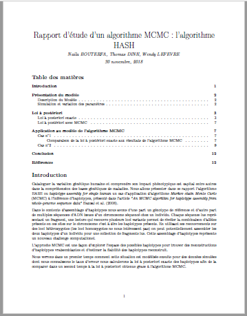
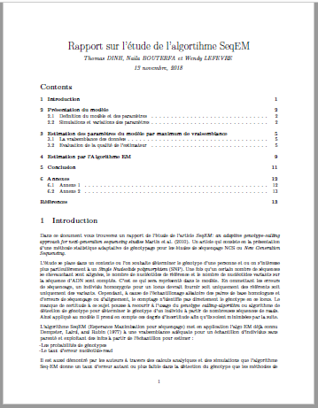

Projets d'algorithmes statistiques
Description
Dans le cadre du cours d'algorithmes stochastiques, suivi au sein de mon master d'Ingenierie Mathématique et Biostatistiques (Université Paris V), j'ai eu l'occasion d'étudier l'algorithme MCMC (Monte Carlo Markov Chain) et l'algorithme seqEM (Esperance Maximization), qui jouent un role important en Génomique, d'effectuer des simulations afin de mieux le comprendre leurs fonctionnement et de résumer les informations de lecture de publications scientifiques dans les rapports pdf générés avec du code LaTeX.
|  |  |
| Rapport 1 : Algorithme seqEM | Rapport 2 : Algorithme MCMC |